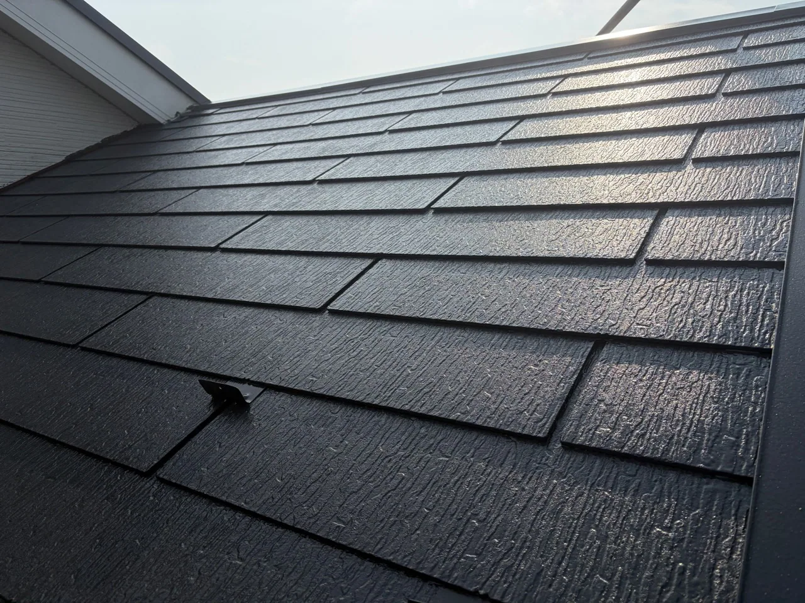

色あせ
屋根表面の色が薄くなり、以前より艶がなく見える状態です。
屋根は日差しと雨を直接受ける場所です。塗装が必要な屋根材かを確認し、傷みの状態に合わせて施工内容をご提案します。

スレートや金属屋根は、表面を保護するために塗装を行う場合があります。一方、既存の桶川市鴨川・川田谷の事例では屋根が瓦だったため、屋根塗装は行わず外壁と付帯部を施工しました。
屋根を見ずに一律で塗装を勧めるのではなく、屋根材と状態を確認したうえで必要な内容だけをご案内します。
屋根表面の色が薄くなり、以前より艶がなく見える状態です。
表面にコケや汚れが付着している場合は、洗浄と下地の状態確認が必要です。
棟板金などの鉄部は、状態に応じてさび止めを塗ってから仕上げます。
塗膜の浮きや剥がれが見られる場合、塗装前の下地処理が重要です。
訪問営業で屋根の不具合を指摘されても、その場で契約する必要はありません。複数社の説明と見積りを比較してご判断ください。
汚れ、コケ、古い塗膜を洗い流します。
鉄部などの状態を確認し、必要に応じてさび止めを塗ります。
屋根材と仕上げ塗料を密着させるための下地を作ります。
塗料を重ねて塗り、仕上がりと耐久性を整えます。